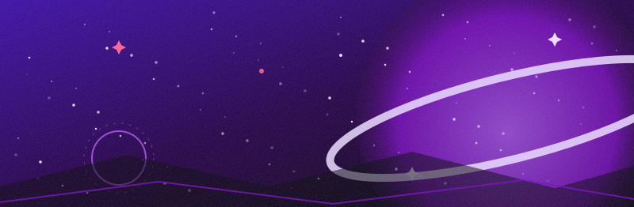

Bienvenid@ a mi rincón en el espacio. Aquí no hay algoritmo: hay un dibujante que quería volver a tener casa en la web, con 3 columnas, botones 88x31 y mucho clip-path. La galería y los encargos están en su sector.
Todo el sitio es estático: HTML + CSS + JS a pelo, preparado para Neocities o GitHub Pages. Los comentarios funcionan con GitHub Discussions (giscus) — sin servidor, sin base de datos.
obra destacada
new
«gatita astronauta»
Mi pedazo favorito del mes: una pequeña exploradora espacial flotando con su casco. (Hecha a mano en este sector, sin IA en el proceso.)
ver en galeríaúltimas obras
preview


daily transmissions
auto-logregistro de actualizaciones
live-
Rebrand espacial. El sector pasa a negro abisal + neón. Nuevo layout P5/GG, widget de Discord en vivo y comentarios con giscus.
-
Añadida la página de encargos con 7 categorías y TERMS por tarjeta. Estado por categoría: OPEN/CLOSED.
-
Galería con filtros: original, fanart, NSFW, cómics y animación. Lightbox «take your time» sin frameworks.
-
Migración del sistema de música a un pad espacial generado con Web Audio API. Sin mp3, sin servidor.
-
Fundación del sector. Primer bootstrap de «Lunnie's Corner» en Neocities 🎉
guestbook // comentarios
vía github